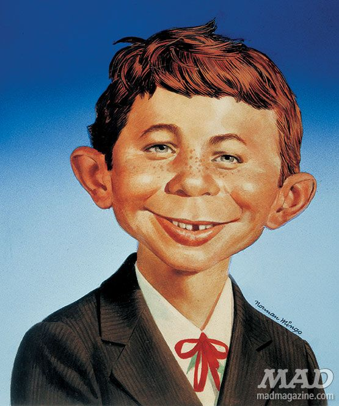

Diese Webseite ist ein erster Versuch, HTML und CSS zu nutzen.
Was machen Sachen?
Alfred E. Neumanns Hobbys:
Ich bin Alfred E. Neumann, das Gesicht des MAD-Magazins –
bekannt für mein sorgloses Lächeln und mein Motto:
„What, me worry?“. Mein ganzes Leben dreht sich darum,
keine Probleme zu sehen, die Welt mit Humor zu nehmen
und einfach mal nichts ernst zu nehmen. Ich treibe gern
Unfug, lasse mich von nichts aus der Ruhe bringen und
sorge dafür, dass die Leute immer etwas zum Lachen haben.
Warum sich Sorgen machen, wenn das Leben doch so viel
Spaß bieten kann?